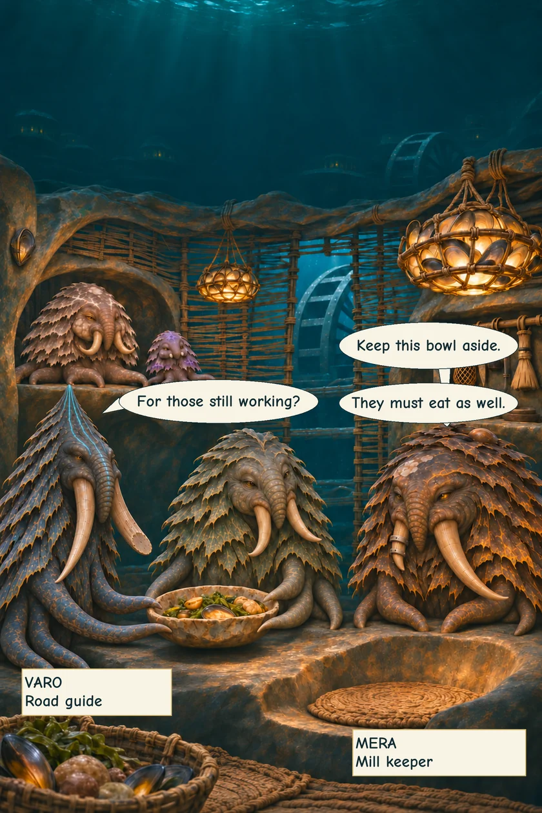
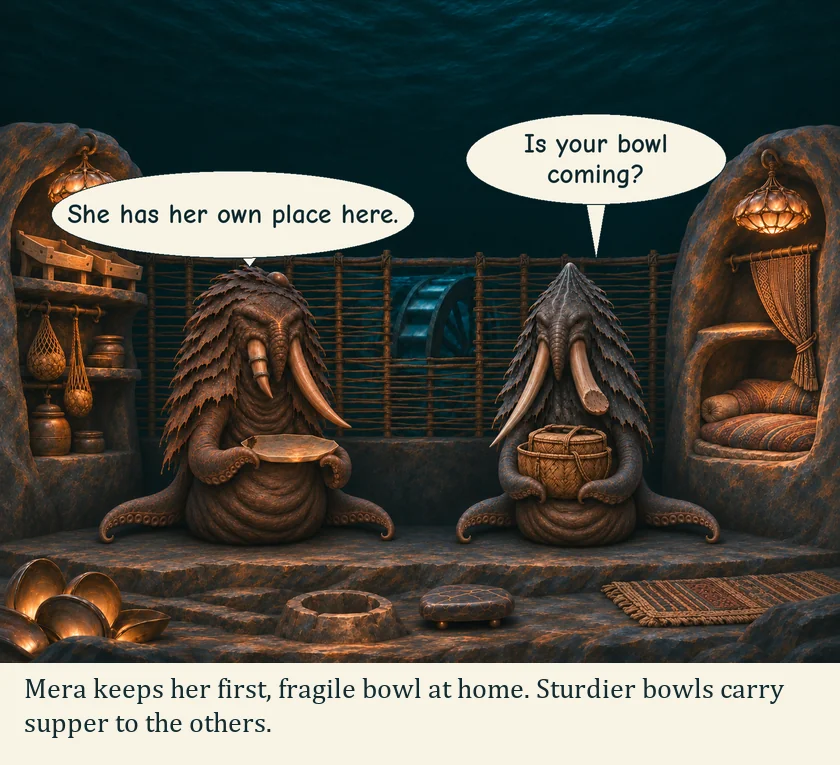
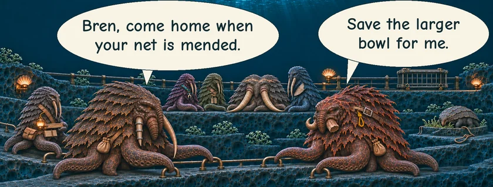
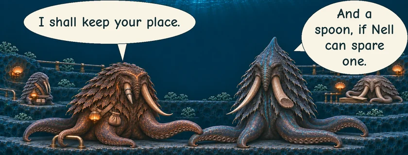
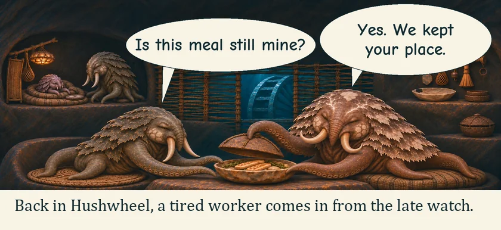

THE ORUUN · TEN YEARS BEFORE HUMANITY AWAKENS
The Bowl Kept Aside
In Hushwheel, supper begins before the last worker comes home.
MERA · Mill keeperVARO · Road guideBREN · Net mender





The late watch finds a meal, and a place that has been theirs all along.
Read the words
Keep this bowl aside.
For those still working?
They must eat as well.
Mera keeps her first, fragile bowl at home. Sturdier bowls carry supper to the others.
Is your bowl coming?
She has her own place here.
Bren, come home when your net is mended.
Save the larger bowl for me.
I shall keep your place.
And a spoon, if Nell can spare one.
Back in Hushwheel, a tired worker comes in from the late watch.
Is this meal still mine?
Yes. We kept your place.